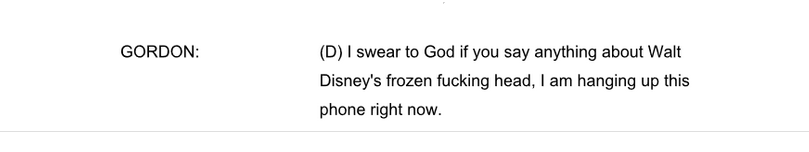
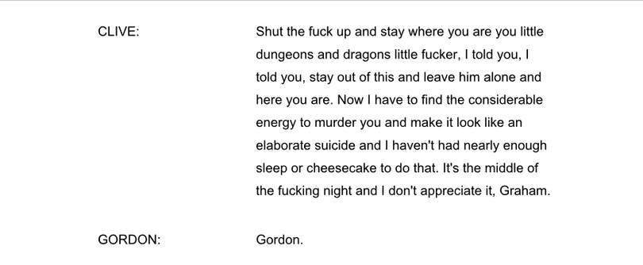

I Sat Down And Counted The GDPR Violations In Fiction Podcast Red Valley
Or, just because you're carrying out human experimentation doesn't mean you can let data protection standards slip
Red Valley is an audio drama about the lengths people will go to develop the secret to eternal life, and follows Warren Godby and Gordon Porlock as
they have a truly terrible time working for a company known as Overhead. I'd describe it as sci-fi, but in the same way Jurassic Park is sci-fi -
grounded in reality, if you'll look past the bits of hand-wavey science.
It's a genuinely good show, with an absorbing plot, interesting characters, and all the fleshy sound effects resulting from unethical science gone
wrong that you could possibly want.
So, naturally, I decided to sit down and count the data protection violations committed.
Ground Rules
I'm using the requirements laid out in the General Data Protection Regulation (GDPR) and the UK Data Protection Act 2018 to measure what actions count
as violations or infringements of rights. Some of them will be outright illegal actions, while in some cases it may be a case of reasonable steps
not taken.
We use this specific legislation because a) that's what I have knowledge of, and b) this podcast is set around the UK, and specifically at the Red Valley Seed Vault in Scotland,
and c) most of the podcast is set in 2020. I'm still using these bits of legislation even when we have flash-backs and -forwards to 2017 and
2064, mostly to save myself a headache.
And, of course, spoilers for all currently-released Red Valley episodes.

S1E1 - Tortoise
- We open as Warren calls around various departments are Overhead, trying to find information on the seed vault
- I'm including this because genuinely I was convinced that the reveal was going to be that Warren didn't actually work there because his explanations were so vague and nobody checked anything. Figuring out company structure is a key part of performing reconnaissance, one of the inital steps carried out by a someone doing a security audit, or by a criminal looking for a mark!
- Nobody checks he actually works there. Nobody!
- Not GDPR violation, but give your employees cybercrime training for god's sake
- Warren has his first conversation with Gordon, who is recording everything he encounters, and wants Warren to do so as well
- Another not-actually-a-violation, because what Gordon's doing isn't actually illegal
- Under the Regulatory Powers Act 2000, you can make recordings of people without consent provided it's for personal use. (It may, however, go against company policy)
- This is just Gordon, not an Overhead company thing, so he's allowed to do so, and in his defence he does tell Warren he's recording, which is more than most people we encounter will do.
- Gordon gets Warren's address from Payroll by pretending to be him, and then used that to send something to his house
- Our first data privacy violation of the podcast!
- Individuals have a right to receive the data stored on them (section 45(1)(a, b) of the DPA), and a third party can make this request if they can prove they're entitled to do so. Gordon, who did not talk to Warren about this, was not entitled to do so
- He straight up did some social engineering - this is essentially phishing, pretending to have a legitimate need for (say) a password, or an address, so the person with access to it will hand it over.
- This is taking action with the intent of securing access to unauthorised personal data, which is not only an offence under section 170(1) the DPA 2018, but also under the Computer Misuse Act 1990!
+1 VIOLATION
S1E2 - The Golden Bullet
- Data leak! The box Gordon sent to Warren has turned out to be a taped log which he definitely doesn't have permission to access, nor share further.
- It contains personal sensitive information regarding (as we'll find out) health and genetics, albeit in an pseudonymised form (something that's almost anonymous, but can only be tied back to the original person if you have additional information kept separately). No attempt was made to remove the pseudonymisation, so this is only another offence under our old friend section 170.
- Remember that number - it will be coming up again
- However this tape has been stored, it was not appropriately secure, given how it ended up in Gordon's hands, who was then able to ship it (via the very company who should have been responsible for it!) to Warren's house. Security for data appropriate to the risk of its loss is required under article 32 of GDPR
- They're finally asking Warren for account numbers to prove it's him though, which is a win for both data protection and the kind of bureaucracy that makes you want to bash your head against a wall.
+1 VIOLATION
S1E3 - The Picnic
- Now Gordon is sharing audio data from CCTV footage at Red Valley, not just a researcher's personal log.
- Yep, section 170 again!
- For (and I quote) dramatic effect, the CCTV has been spliced together with another taped log from the same person as the previous episode. However, I'm counting the log as a continuation of the last violation, which means this episode gives us:
+1 VIOLATION
S1E5 - Morir Invictus
- Man of the hour in R&D, Clive, in an effort to get Gordon to Knock It Off, Already, shares with him what should be confidential information about Warren's mental health.
- Needless to say, Warren was not aware of this fact, and did not give permission for this to happen.
- Now, section 170 prohibits accessing personal data without the consent of the controller. The data controller, in this case, is Overhead, not Warren himself. However, as we will find out, Overhead take more of a "look away and let them get on with it" approach to Red Valley, rather than "give them permission". Therefore...
+1 VIOLATION
S1E6 - Do You Want To Continue?
- Turns out that Clive has bugged basically everything Warren has touched.
- Unlike with Gordon, this is for the Overhead company and so is not private use. This also goes beyond email logging or CCTV, both of which employees would likely have been informed about when being hired, and are justifiable forms of monitoring.
- Warren did not give consent for this to happen, nor does he have the option to withdraw it. Therefore, processing this data isn't lawful, under article 6 of GDPR.
- Based on how many tapes we know Gordon has acquired, this audio data probably didn't have sufficient security ensuring the same couldn't happen again (article 32 again).
- Gordon gets (well, is coerced into) a job in the Red Valley archives.
- His job now centres entirely around reading and listening to logs containing personal and sensitive information.
- He definitely does not have the training to do this in a secure manner (especially given his track record of sharing tapes with Warren who - when the first met - was an entire stranger).
- I'm counting this as "a violation just waiting to happen"
- Wait A Minute This Guy At The End Isn't Gordon
- The epilogue is a jump forward in time to 2064, where we get introduced to (someone who we will eventually find out is) an AI version of Gordon.
- The DPA doesn't cover this eventuality, but only due to a lack of imagination on the government's part.
- As we will find out, whatever data used to create the AI (be it voice recordings, social media posts, or analysis of behaviour) was not used with Gordon's permission, nor is he even aware the AI has been created.
- This data has not been used for specified, explicit purposes, has been kept longer than necessary, and has not been used in an adequate, relevant, or necessary way.
- This is like someone went down the GDPR guidelines and figured out how best to break every single one. I'm counting this under one big violation though, because it's only one AI.
+3 VIOLATIONS

S1.5E1 - While You Were Hypersleeping Part 1
- Red Valley has a (terribly organised, we are informed) archive. There are specific guides available regarding archiving in the public interest, which is allowed to deal with personal data in ways differently to a standard company (section 19 of the DPA).
- I think, however, it's less of an archive and more like a store of medical and scientific records.
- Data can be stored indefinitely for medical research purposes, providing any data processing is lawful, fair, and transparent
- Medical research, that is, carried out by people approved to do so by a recognised ethics committee, relevant NHS body, or similar. (section 19 (4)).
- Like fuck did they get ethical permission.
- It was at this point I realised Red Valley definitely does not have a named data protection officer dealing with this. Anyone who works in data compliance probably doesn't have high enough clearance to access this stuff, and anyone working at Red Valley has no interest in this area
+2 VIOLATIONS
S1.5E3 - While You Were Hypersleeping Part 3
- Surprise! The Blue Sky AI assistant Gordon has been talking to whilst archiving was also a microphone this whole time
- The data it has recorded is for company purposes (as opposed to personal ones, like earlier with Gordon) with no consent asked nor any given. Article 6 of GDPR would like to have words.
- The exact “company purposes” were never specified either (well- the purpose was to spy on Gordon, which likely wouldn't make it past HR), although, to be fair, nobody in this podcast seems the type to read through a privacy policy even if those purposes were stated in it.
+1 VIOLATION
S2E1 - Winnie The Pooh Was A Murderer
- Aubrey, ex-Red Valley employee reveals she and another ex-employee Ben passed information in and out of the company, mostly to Gordon.
- This may well make them whistleblowers, as they're revealing the human experimentation Overhead has been carrying out. As part of an official whistleblowing process, the sharing of data that they do would count as a lawful use of said data.
- However, Gordon isn't a lawyer, an official whistleblowing channel, or a prescribed person or body. This could exempt them from whistleblowing protection laws, since the claims weren't made through a correct channel. We've circled back round to an offence under section 170!
+1 VIOLATION
S2E5 - A Thousand Tonnes of Rock
- Warren and Gordon leave a memory stick full of data on Warren himself for Aubrey to pick up.
- This is significant because it is, I believe, the first time a character has voluntarily agreed to have information about them shared
- Well done Warren you go Warren
- Warren has a legal right to access all data Overhead and Red Valley holds on him. However, remember how section 170 requires the permission of the data controller? Because he definitely does not have that permission.
- Funnily enough, there's no legal precedent for "someone, in the strictest reading of the law, stole their own data". Violation?
- However, subsection (3)(c)(i) allows the defences of "this was done in the public interest" and "this was done to prevent crime". Both of these are applicable in this situation
+0 VIOLATIONS, final answer
S2E6 - Once More Unto The Breach
- We learn the team at Red Valley have been spending the past however long dealing with Warren's pension plan, phone contract, taxes, and other assorted paperwork.
- They've been pretending to have Warren's permission to deal with this stuff, but the various departments are starting to get twitchy and want to talk to Warren himself (another win for data protection).
- Most of this is cancelling broadband deals, however, when dealing with the Overhead pension service, he informs them that he's been seconded. This counts as rectifying incorrect data under article 16 of GDPR, and is one of his rights.
- However, what Overhead hasn't done it take reasonable steps to ensure data regarding Warren's status of employment is up to date, which conflicts with article 5, principle d of GDPR.
- This led my train of thought down a path we like to call “okay but if Warren is seconded, then to what extent does he now count as an employee? Is lab rat an accepted position? Does he even get paid? If he's listed as an employee, but isn't paid, are Overhead falsifying data?”
- We could continue like that all day. We will not.
+1 VIOLATION
S2E7 - The Boat and Bridger
- Another recording of sensitive medical data shared without permission!
- This is an interesting case, because it was sent via Gordon, an Overhead employee, out to Aubrey, an ex-employee, who then sent it back to a different Overhead employee
- Still not allowed though (yeah, section 170 again).
- Warren's personal medical information is then discussed with the Senior Vice-Chariman and the Acting Director of Research & Development, in a function room in a crowded pub
- This puts said data at risk of being overhead (read: unlawfully obtained, section 170). Good practise states to try and minimise the risk of this happening as far as is possible, - whilst the function room is better than the main pub area, it'd have been better still to have this conversation at an Overhead location
- And no, threatening to shoot the serving staff if they sprag doesn't count as minimising risk of being overhead.
+2 VIOLATIONS
S2E8 - Minor Heroics
- The series two finale has a grand total of zero data privacy violations!
- We make up for it, however, by having approximately 30 minutes and 9 seconds of other bonus crimes, including creating and using explosives (Explosives Regulations 2014), destruction of private property (Criminal Damage Act 1971), the probable unlawful possession of a gun (Firearms Act 1968), and multiple counts of grievous bodily harm (Offences against the Person Act 1861).
Which means...
After two series, one miniseries, and 18 total episodes, we have ended up with
14 total dick moves under GDPR and the UK Data Protection Act 2018!
(and series 3 hasn't even been released yet)
So, if you want someone to carry out unethical human experimentation with the aim of developing cryostasis technology, maybe find a
company with a better track record of data protection.